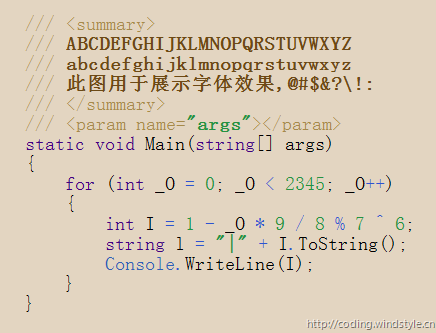

让代码看起来更舒服（2）：选择适合的字体
2009-11-23 08:29 by Windie Chai, 22210 阅读, 66 评论, 收藏, 编辑上一篇文章我和大家分享了一些Visual Studio的配色方案，以及一个用来生成配色方案的网页版工具，现在我再来和大家分享一下Visual Studio的字体设置。
字体不仅是设计师手中重要的武器，对我们开发人员来说，字体的选择也有许多讲究，一个好的、适合展示代码的字体，应该具备以下要素：
- 等宽的字符
- 简洁、清晰并且规范的字符形状
- 支持ASCII码为128以上的扩展字符集
- 与字符同等宽度的空格
- 易于分辨的小写字母l、大写字母I、数字1和符号|
- 易于分辨的大写字母O和数字0
- 易于分辨的前引号和后引号，最好能够前后对称
- 易于分辨的其他标点符号，尤其是大括号、中括号、小括号和尖括号
- 良好的中文支持和显示
下图展示了一个极端的反例，虽然很有个性，但并不适合用来显示代码。它的大写字母大的可怕，小写字母却小的可怜；字符不仅不清晰，而且不规范；小写字母l、大写字母I、数字1和符号| 难以分辨；大写字母O和数字0难以分辨；标点符号还凑合，只是下划线为什么是断开的？
当然，这个反例的确有些夸张，但其上文所列举的条件是比较苛刻的，我们在选择字体时没有必要非要完全满足所有条件，事实上这种字体也是凤毛麟角。下文所分享的一些字体也并没有完全满足所有条件，我们发现，只要满足了其中一些关键条件，用来显示代码就已经很不错了。
在Visual Studio中，更改编辑器的字体是件简单的事情，选择菜单【工具】【选项】，在弹出的“选项”对话框中依次选择“环境”和“字体和颜色”，然后在“显示其设置”中选择“文本编辑器”，最后在“字体”中选择字体就可以了，如下图所示：
在上图中，我们发现Visual Studio已经将等宽字体用粗体标识了出来，这样做是为了让我们更容易找到等宽的字体，并不表示等宽字体就一定适合显示代码，比如下图所示的“新宋体”就是一个反例：

在新宋体中，数字0之比大写字母O瘦那么一点点，小写字母l和数字1也十分相像，幸亏配色方案能够颜色将它们区别开来，否则实在难以分辨。这也从另一个角度说明了配色方案与字体是相辅相成的，搭配恰当时，会让代码更加清晰易辨。
下面就和大家分享一些在编程界声名烜赫的字体，截图所采用的配色方案为HumaneStudio，展示顺序为字体首字母升序。这些字体可能乍一看都一样，但仔细品味，还是能够发现不同的味道，希望大家都能找到适合自己的字体。
Andale Mono，演示字号为14，猛击这里下载：
Anonymous Pro，演示字号为14，猛击这里下载：
Bitstream Vera Sans Mono，演示字号为14，猛击这里下载：
Consolas，演示字号为14，Windows或Visual Studio已内置：
Courier New，演示字号为14，Windows已内置：
DejaVu Sans Mono，演示字号为14，猛击这里下载：
Envy Code R，演示字号为16，猛击这里下载：
Inconsolata，演示字号为16，猛击这里下载：
Share TechMono，演示字号为16，猛击这里下载：
注：此字体似乎会将连在一起的fl显示为一个点，不建议使用，可惜可惜。

尾注：
- 本文所分享的字体均支持ClearType。
- 从评论来看，中文的显示的确是一个影响美观的重要因素，所以产生了许多微软雅黑和一些优秀英文字体的混合版，但其实还有一种方法可以快速而简单的实现用不同的字体显示中英文（感谢DiryBoy提醒），方法如下：
- 用文本编辑器打开%AppData%\Microsoft\VisualStudio\9.0\VsFontLk.dat；
- 将0804一行修改为需要的中文字体，格式为“0804|中文字体名称”，比如“0804|微软雅黑”；


#51楼 小强.假的 2009-11-23 15:51
微软雅黑字体与 Mono Bitstreams 字体的混合字体：
http://zhq.ahau.edu.cn/blog/article.asp?id=378
#52楼 DiryBoy 2009-11-23 17:19
[EDIT]
Oh yeah!成功了！
http://tu.6.cn/pic/show-new/id/5457815/
#53楼[楼主] Windie Chai 2009-11-23 17:54
我觉得这是最好的方法！
不用破坏版权编辑别人的字体，也不用冒着风险替换系统字体。
感谢提醒！
我已经更新到文章中了。
#54楼 Muse 2009-11-23 18:28
以前直接用雅黑，但是不是等宽，虽然看起来不错，但对其就很麻烦（尤其是空格很小，看空格很难）
#55楼 zeus2 2009-11-23 20:51
主要Consolas默认中文是宋体 比较难看不协调。
#56楼 DiryBoy 2009-11-23 22:10
我也学到了东西，都旨在 happy coding，哈哈:)
#57楼[楼主] Windie Chai 2009-11-24 08:28
你可以参照文末最后一段直接让Visual Studio用微软雅黑显示中文，英文嘛，自己随便设置。
#58楼 斯克迪亚 2009-11-24 15:25
thx
#59楼 sexla 2009-11-24 19:56
#60楼 Mr.Choi 2009-11-26 16:34
#61楼 李胜攀 2009-11-30 10:09
#62楼 Bob-wei 2009-11-30 10:39
主要使用Consolas+宋体，在我的液晶显示器上看起来很舒服。
#63楼 cnyao 2009-11-30 13:19
其实Verdana很不错，关键就是不是等宽，有同学不太理解为什么等宽这么重要，主要涉及到上下的字体对齐，你注意变换一下源码的显示，然后观察一下效果就应该清楚了，还是等宽的适合编程人员使用。
#64楼[楼主] Windie Chai 2009-12-02 08:59
对，我一直觉得，良好的变成习惯包含了不要写过长的代码行，这样会降低可读性，而等宽字体会让我们更容易检查代码行的长度。
#65楼 jackyspy 2010-05-21 21:13
可以改中文字体，可惜中文显示太小了。
#66楼 take it and go 2011-04-28 15:00